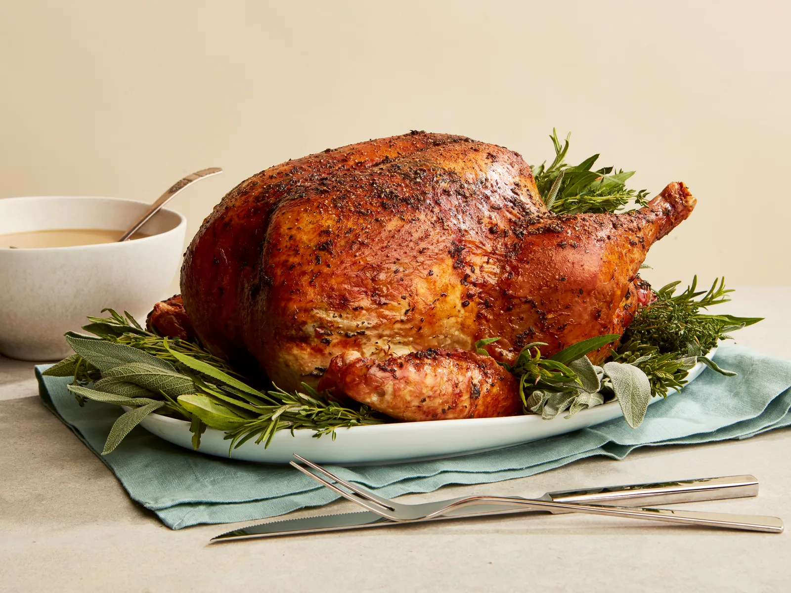

Wondering about the best way to cook a turkey so the skin is crispy, both white and dark meat are juicy, and the bird’s internal temperature meets food safety standards? You’ve come to the right place.
By Anastasia Grigorenko, The Editor of Cooking Classy
November 30, 2024
To some, turkey is a succulent holiday centerpiece—to others, merely a vehicle for gravy. Whichever camp you fall into, knowing how to cook and prepare a turkey so it emerges from the oven golden on the outside and juicy within is the key to keeping everyone happy. Whether you’re a Thanksgiving pro ready to try something new (Will it be a spatchcocked turkey this year? A grilled bird? How about confit? ) or a holiday-hosting newbie preparing a whole turkey (or even a turkey breast) for the first time, allow this to be your guiding principle: You don’t need a complicated Thanksgiving turkey recipe; just stick to the basics and let the side dishes make it a show. Ahead you’ll find everything you need to know, including step-by-step instructions for cooking and preparing the best turkey for your holiday table.
The ideal place to thaw a frozen turkey is in the fridge. Depending on the size of your bird, this can take up to a week. Want to brine your turkey? Now’s the time. If you go with a wet brine, you can submerge a frozen turkey right away; for a dry brine, wait a day or two until you can remove the giblets from the turkey cavity and the skin is more pliable, which will allow it to better hold on to the rub. (A fresh turkey should also get some dry brine action at least one to two days before cooking.)
4–12 lb.: 1 to 3 days
12–16 lb.: 3 to 4 days
16–20 lb.: 4 to 5 days
20–24 lb.: 5 to 6 days
About one hour before you plan to cook your turkey, remove it from the fridge—it’ll cook more evenly when it’s not super chilled. Set it on a roasting rack—one that allows the turkey to sit at or just below the top of your largest roasting pan (this will allow air to circulate all around the bird, which will help you achieve crispy skin across the turkey’s entire surface). No roasting pan? You can also use a cooling rack set inside a large sheet pan.
If you haven’t yet removed the giblets, do so now. Check the neck cavity too. If you’d like, save the neck and giblets for stock, stuffing, gravy, or another use. You might also come across the occasional feather quill stuck in the bird—you can yank these out with your fingers or with some clean needle-nose pliers.
About 15 minutes before you plan to roast, position your oven rack on the lowest rung and preheat the oven to 350°F. Some recipes instruct you to briefly roast the turkey at a high oven temperature before lowering the heat for the duration of the cooking time. The belief is that the high heat “sears” the bird and the low heat gently cooks it through, yielding a turkey that’s juicier and more succulent than average. We haven’t found this method to make a huge difference, and it can cause the skin to brown very quickly (often too quickly). Steady heat means less tending to, freeing you up to do other things, like prep your mashed potatoes and other Thanksgiving side dishes.
Set your turkey breast side up on the roasting rack and rub room-temperature salted butter—or your favorite flavored compound butter—all over it. (For a 12-to-14-pound turkey, you’ll need about ½ cup [1 stick] of butter.) Slowly work your fingers under the skin, starting at the neck, being careful not to tear the skin or separate it completely at the large cavity. Rub most of the butter under the skin, a little inside the large cavity, and the rest over the skin. If you’ve chosen to brine your bird (via a wet brine or dry brine), you can skip this final seasoning. For kosher turkeys, which are already salted, there’s no need to salt the cavity, but you will want to salt the skin. Here’s how to do it: For a 12-to-14-pound bird, sprinkle 1½ teaspoons each kosher salt and freshly ground black pepper in the large cavity and another 1½ teaspoons each over the skin. You can add other ground spices and seasonings to your mix at this point too.
Sounds random, we know. But stuffing the neck cavity (not the large cavity) with a halved apple—placing the cut side against the turkey’s flesh with the rounded side facing out—buffers the breast from heat, protecting it from overcooking. But don’t fill the main cavity with stuffing—it’ll only slow down your cooking time. Instead, prep your stuffing recipe in a casserole dish and bake it on the side.
The simplest way to figure out turkey roasting times is to calculate 13 minutes per pound at 350°F for an unstuffed turkey (that’s about 3 hours for a 12-to-14-lb. turkey), or 15 minutes per pound for a stuffed turkey. Check the temperature about three quarters of the way through that time, and then again every 10 minutes, and roast until the temperature reads 165°F (or 150°F as the case may be; more on that below) when checked at the thickest part of the thigh meat and the thickest part of the breast meat.
For an 8-to-12-pound turkey:
400°F for 2½ to 2¾ hours
350°F for 2¾ to 3 hours
325°F for 3 to 3¾ hours
400°F for 4¼ to 4½ hours
350°F for 4½ to 4¾ hours
325°F for 4¾ to 5 hours